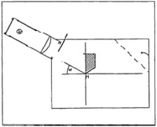

| Objetivo: |
Estudiar la descomposición de la luz blanca (dispersión) al refractarse en un prisma.
|
|
|
| Introducción: |
|
Prisma (óptica), bloque de vidrio u otro material transparente que tiene la misma sección transversal (generalmente un triángulo) en
toda su longitud. Los dos tipos de prisma más frecuentes tienen secciones transversales triangulares con ángulos de 60 o de 45º.
Los prismas tienen diversos efectos sobre la luz que pasa a través de ellos.
Cuando se dirige un rayo de luz hacia un prisma, sus componentes de distintos colores son refractados (desviados) en diferente
medida al pasar a través de cada superficie, con lo que se produce una banda coloreada de luz denominada espectro. Este fenómeno
se conoce como dispersión cromática, y se debe al hecho de que los diferentes colores de la luz tienen distintas longitudes de onda,
y son más o menos frenados al pasar a través del vidrio: la luz roja es la que resulta menos frenada, y la violeta la que más. El
físico británico del siglo XVII Isaac Newton fue el primero en deducir, a partir de experimentos con prismas, que la luz solar
ordinaria es una mezcla de los diferentes colores.
|
|
|
| Desarrollo Experimental: |
Atención:
Cuida que el cuerpo óptico trapezoidal no se mueva cuando se desplaza la caja luminosa.
Montaje
- Coloca sobre la mesa la hoja de papel en sentido horizontal. Traza dos líneas perpendiculares en el tercio izquierdo de la hoja.
Al punto de intersección lo denominamos M (Figura 1). Haz una marca en la línea vertical a 6 cm. por encima de M.
- Marca un ángulo de 28° desde el punto de intersección M, y traza una línea auxiliar (Figura 1).
- Dobla hacia arriba la esquina superior derecha del papel. Formará una especie de pantalla.
- Coloca el cuerpo trapezoidal (la cara mate hacia abajo) sobre la línea vertical, entre el punto M y la marca, como indica la Figura 1. Dibuja el contorno del prisma.
- Coloca la caja luminosa, con la parte de la lente, pero sin diafragma, oblicua por encima del cuerpo óptico (Figura 1).
Experimento 1:
Conecta la caja luminosa a la fuente de alimentación (12 V).
Desplaza la caja luminosa hasta que el borde inferior de la sombra del haz coincida con la línea auxiliar (Figura 1).
Observa el haz refractado que sale del prisma formando franjas. Corrige, si es necesario, la posición de la caja luminosa girándola cuidadosamente. Su posición es correcta cuando el haz refractado se proyecta completamente coloreado sobre la pantalla, viéndose también el color violeta.
Tapa aproximadamente la mitad de la abertura de la caja luminosa, para que la luz salga sólo por la cara oblicua del prisma
(Figura 1).
Anota los colores que se ven en la pantalla.
Introduce cuidadosamente desde abajo la punta del prisma en ángulo recto dentro del abanico de colores del haz refractado
(Figura 2: 1). ¿Qué observas detrás de este prisma? Anótalo en la Tabla 1.
Repite el mismo procedimiento, pero introduce en el haz la punta del prisma desde arriba (Figura 2: 2). Anota de nuevo lo que
observes en la Tabla 1.
Quita el prisma en ángulo recto del papel.
Coloca el diafragma de una rendija en la caja luminosa, en la parte de la lente.
Desplaza la caja luminosa para que el haz de luz incida sobre el prisma paralelo a la línea auxiliar, a 1 cm. aproximadamente de
ella.
Marca el haz de luz incidente, el centro y los bordes del haz refractado. Anota en la hoja de papel la posición de los colores.
Desconecta la fuente de alimentación y quita el cuerpo óptico del papel.
Traza, siguiendo las marcas, la trayectoria del haz de luz antes, dentro y detrás del prisma.
|
| Resultados y Conclusiones: |
|
1) Que colores observas en la pantalla.
De acuerdo a las observaciones realizadas:
1) ¿Qué sucede con la luz blanca cuando atraviesa un prisma?
2) De qué color es la luz que más se ha refractado, y de qué color la que menos.
3) ¿Se pueden volver a descomponer los colores del espectro mediante un segundo prisma?
4) ¿Dónde puedes observar en la naturaleza fenómenos cromáticos similares?
Ejercicio complementario:
Traza en la hoja de papel las normales, e intenta explicar, por lo que has observado en el haz estrecho y utilizando la ley de
refracción, la trayectoria de la luz al atravesar un prisma.
|
|
|
| Figura 1: |
|  |
| |
| Figura 2 |
 |
| |
|